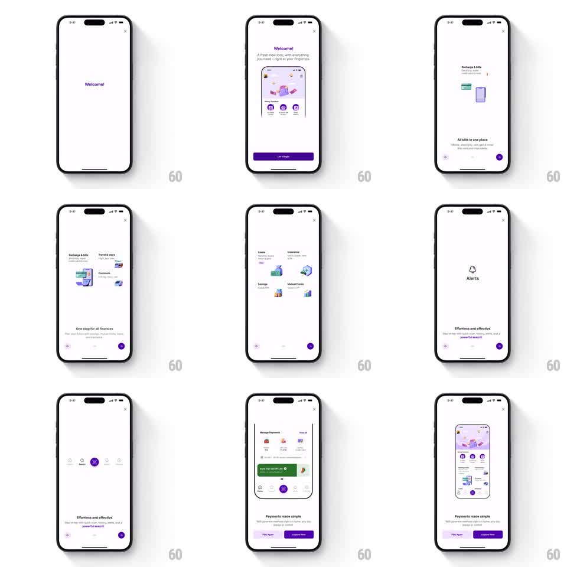

Media
Frame-by-frame

Rebuild this animation 1:1: PhonePe's "new look" intro - a purple-on-white onboarding where feature cards assemble in staggers, icons morph between categories, and pages transition with springy slides, ending on a Payments made simple screen with Play Again and Explore Now.

Rebuild this animation 1:1: PhonePe's "new look" intro - a purple-on-white onboarding where feature cards assemble in staggers, icons morph between categories, and pages transition with springy slides, ending on a Payments made simple screen with Play Again and Explore Now. ## Integration Integration: stack-agnostic spec - springs given as stiffness/damping, timed motions as duration + curve; map every value to your framework and animation library of choice. ## Scene White screens with a close X top-right and page dots bottom. Page 1: "Welcome!" in purple, then a phone mock illustration with "A fresh new look, with everything you need - right at your fingertips" and a purple "Let's begin" button. Page 2: "All bills in one place" with a Recharge & bills card. Page 3: "One stop for all finances" with category cards (Recharge & bills, Travel & stays). Page 4: a 2x2 grid - Loans, Insurance, Savings, Mutual Funds. Page 5: "Effortless and effective" with an Alerts bell. Page 6: "Payments made simple" over an app screenshot with "Play Again" (outlined) and "Explore Now" (purple) buttons. ## Motion spec Pattern: springy staggered card assembly with icon morphs across paged onboarding. - "Welcome!" scales in (spring ~320/16, scale 0.7 -> 1) then slides up as the phone illustration rises (spring ~300/20) and Let's begin fades in. - Page transitions: content slides left/right with the swipe (1:1 tracking) and springs to settle (~300/22); page dots slide with a stretch on the active dot. - Each page's cards assemble with a 70ms stagger: rise 24pt + fade + slight rotation (-3deg -> 0, spring ~320/16). - Between pages 2-4, the category icons morph: the old card's icon shrinks to a dot and the new icon grows from it (scale crossfade with a shared-element arc path, 350ms). - The Alerts bell on page 5 rings on entry (rotate -12deg -> 12deg -> 0, 500ms, 2 wobbles). - Final page: the app screenshot slides up (spring ~280/20), buttons stagger in 100ms apart; Explore Now pulses once (scale 1 -> 1.04 -> 1, 400ms). ## Calibration - Purple is the only accent: headers, active dot, primary buttons, icon highlights. - Staggers are always 70-100ms - never a single blob fade. ## Reduced motion Pages and cards crossfade (250ms); no icon morph travel. ## Don't miss - The icon-morph continuity between category pages - icons are born from the previous icon. - "Play Again" restarts the sequence from page 1 with the same choreography.